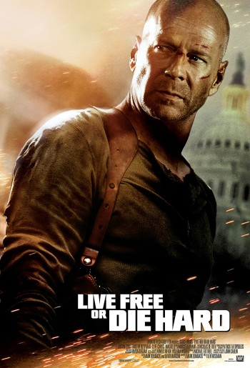
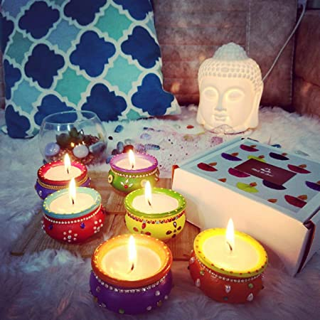

Diwali,kh Guru, was freed from imprisonment. Buddhists in India celebrate Diwali as well The celebration starts with people buying jewellery and utensils on Dhanteras. This is an auspicious occasion to buy any kind of metal as it is believed to ward off evil and bring in prosperity. The next two days—Chhoti Diwali and Diwali—are the most-awaited days of the festival when people enjoy the most. The evening starts after performing puja and offering prayers to the gods. People then light diyas and burst crackers. The entire atmosphere reverberates in a festive note. On the fourth day, Govardhan puja is performed and the festival of lights ends with Bhai Dooj, which is very similar to Raksha Bandhan as it is a celebration of love between a brother and sister.